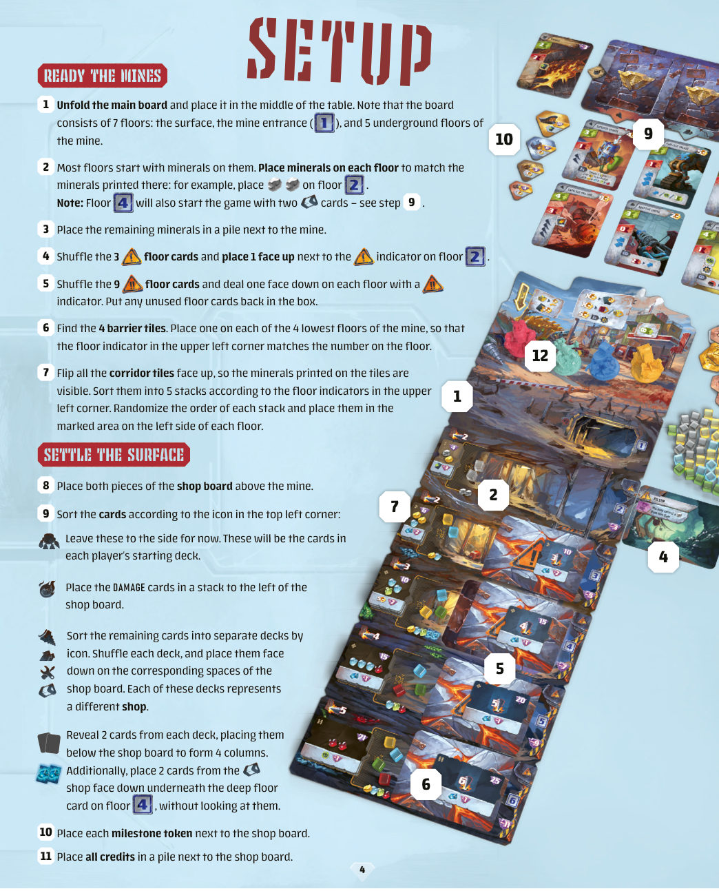
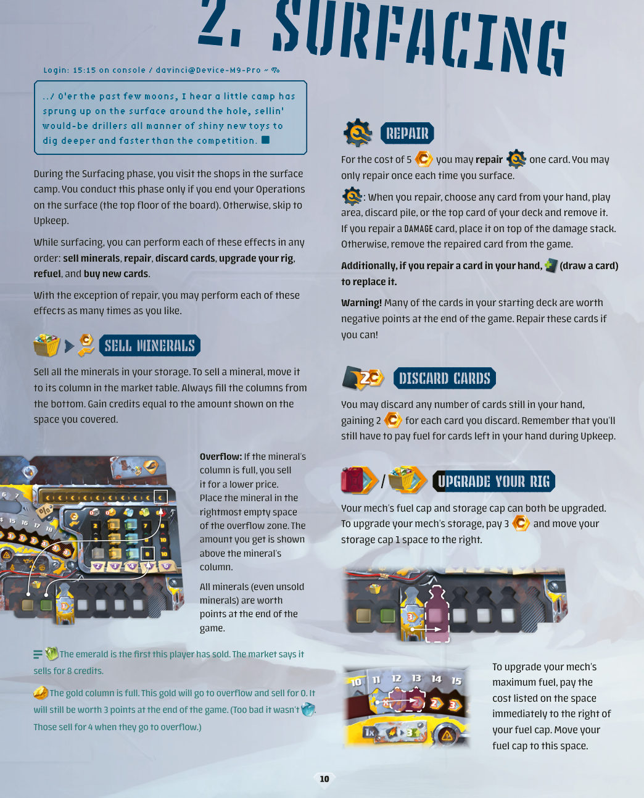
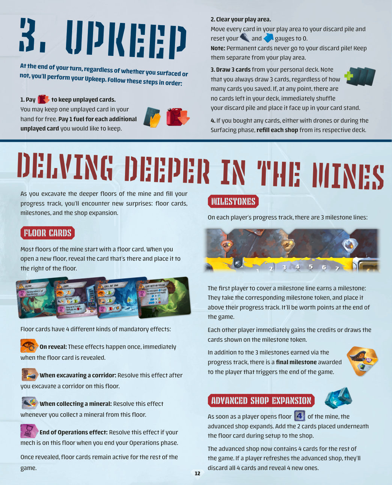
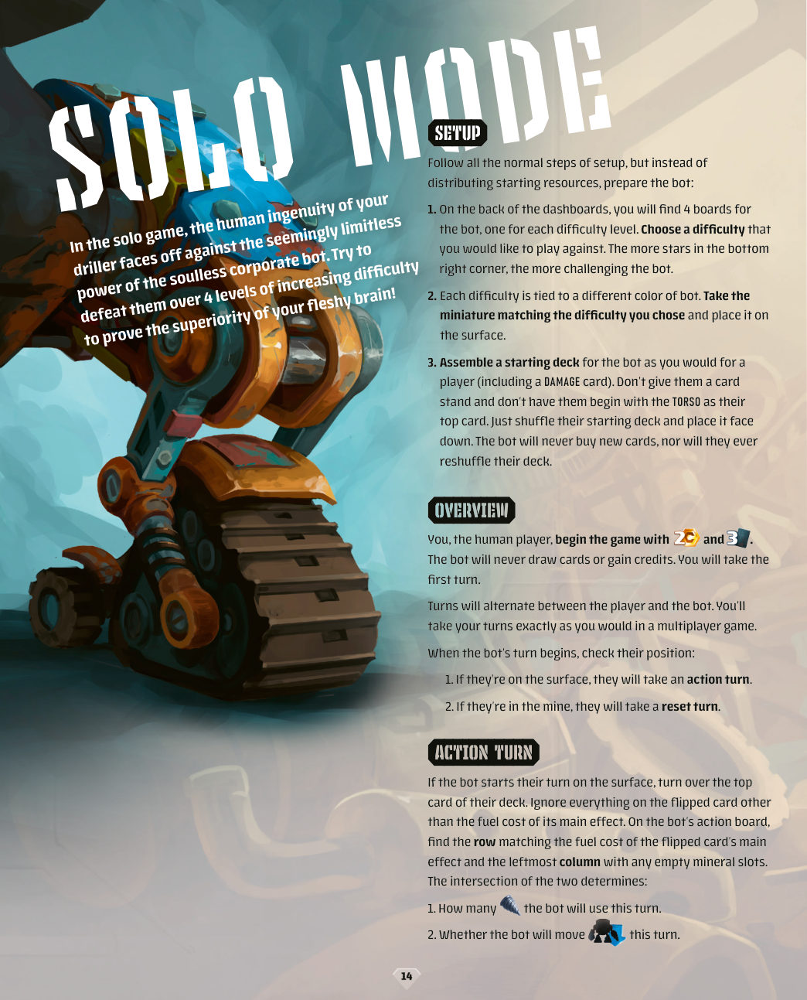
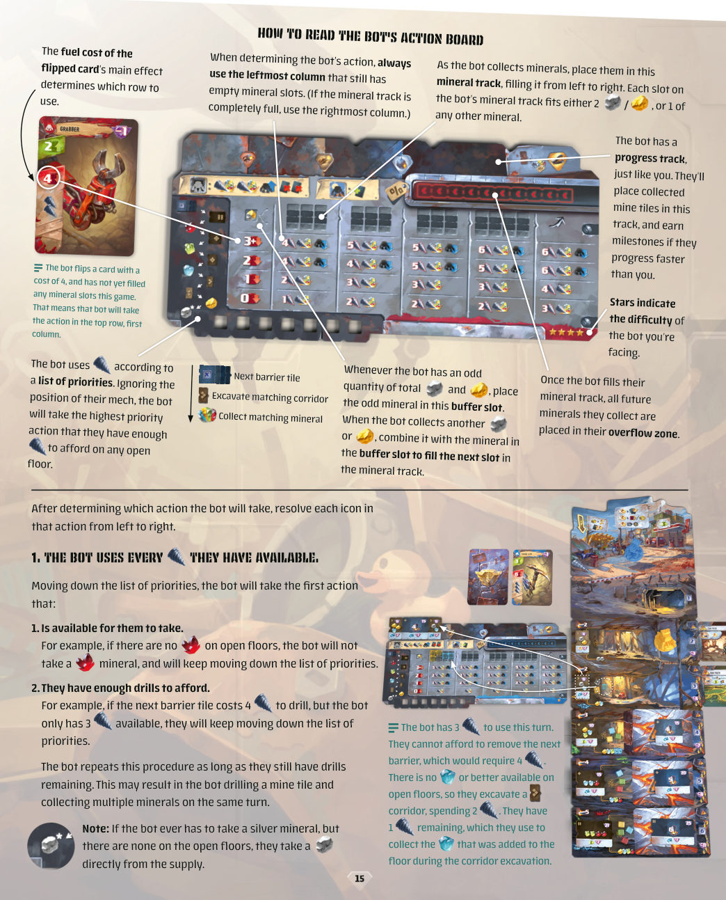
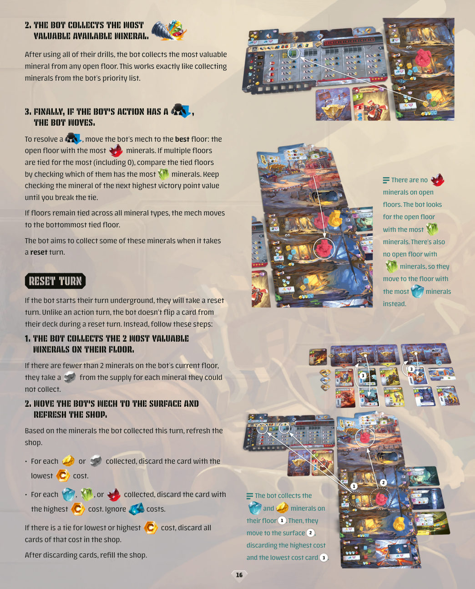

钻探者 · 学习版规则
标记体例：择一＝互斥分支，仅可选定其一，不按先后顺序全部执行；虚线框里的 A / B 两栏同样是择一。 机制 蓝框＝机制说明，陈述该步骤的作用及各格差异。
0游戏概要与目标
玩家各操控一台采矿机甲，在七层矿坑与地表之间往返，收集矿物、钻开矿区板块、改造机甲并精简牌库。终局分数最高者胜。p.3p.13
| 项目 | 取值 | 依据 |
|---|---|---|
| 人数与时长 | 2–4 人，另含单人模式；60–90 分钟 | p.3p.14 |
| 轮转 | 自起始玩家起顺时针，逐个执行完整回合 | p.3 |
| 终局 | 由任一玩家填满进度轨触发，非固定轮数 | p.13 |
| 平局 | 先比剩余信用点，仍平则比剩余燃料 | p.13 |
1初局设置：略过部分内容，关注核心内容
初局仅需完成三组布置。原书的机甲介绍、背景独白与致谢可略过；配件数量见第 2 节。p.2p.4p.5
1.1 布置矿坑
- 展开主板置于桌面中央。矿坑共七层：地表、矿坑入口、五个地下层。p.4
- 按各层印制的矿物图案放置起始矿物；剩余矿物堆在矿坑旁备用。p.4
- 洗混 3 张起始层卡，取 1 张正面朝上置于第 2 层的层卡指示标记旁。p.4
- 洗混 9 张深层卡，在每个印有深层指示标记的层各放 1 张，背面朝下；未用卡放回盒中。p.4
- 取出 4 块障碍板块，分置于矿坑最深的 4 层，板块左上角层号须与该层编号一致。p.4
- 全部坑道板块翻至正面，按左上角层标记分成 5 叠，各叠内部随机排序，置于对应层左侧的标记区。p.4
1.2 布置地表与商店
- 拼合两块商店板，置于矿坑上方。p.4
- 按卡牌左上角图标分类：起始卡留作各人起始牌库；损伤卡整叠置于商店板左侧；其余按图标分叠洗混，背面朝下置于商店板对应位置，每叠即一家商店。p.4
- 每家商店各翻 2 张，排在商店板下方形成 4 列现货。另从高级商店取 2 张，不看牌面，背面朝下压在第 4 层的深层卡下。p.4
- 4 枚里程碑标记与全部信用点分置商店板旁。p.4
1.3 启动机甲
- 各选一台机甲，模型置于主板最上层的地表。p.5
- 组装起始牌库：每位玩家领取牌架、1 张损伤卡、8 张本方颜色的起始卡；躯干卡先取出，其余洗混后正面朝上放入牌架，最后把躯干卡置于牌库顶。起始牌库共 10 张。本作中仅自己可见自己牌库顶牌。p.5
- 发放仪表盘：燃料盖封住燃料罐的 11 与 12 两格，1 个仪表指示物置于 10 格，另 2 个分别置于钻井表与移动表起点；3 枚无人机置于底部槽位，1 枚正面朝上、2 枚背面朝上；储藏盖封住储藏区第 3 格，左侧留出 2 个空格。p.5
- 各发 1 块商店刷新板块，置于仪表盘旁。p.5
- 随机决定起始玩家，按人数与顺位发放起始资源并抽牌。p.5
| 顺位 | 2 人局 | 3 人局 | 4 人局 |
|---|---|---|---|
| 第 1 家 | 2 信用点／抽 3 张 | 2 信用点／抽 3 张 | 2 信用点／抽 3 张 |
| 第 2 家 | 4 信用点／抽 4 张 | 3 信用点／抽 4 张 | 5 信用点／抽 3 张 |
| 第 3 家 | — | 5 信用点／抽 4 张 | 4 信用点／抽 4 张 |
| 第 4 家 | — | — | 7 信用点／抽 4 张 |
2版图与组件速认
按一局中用到的先后次序介绍，不按配件表顺序。p.2p.6
2.1 矿坑主板
七层自上而下排列：地表、矿坑入口、五个地下层。每层左侧设坑道板块叠，叠上方标示该层挖开一块坑道所需的钻井点数。多数层印有起始矿物。最深的 4 层各覆盖 1 块障碍板块，板块数字即清除所需钻井点数。层卡指示标记指示该层是否放置深层卡。p.4p.7
2.2 仪表盘九区
| 区域 | 作用 | 初始状态 |
|---|---|---|
| 燃料罐 | 记录燃料的获得与花费 | 指示物在 10；11、12 由燃料盖封锁 |
| 钻井表／移动表 | 记录尚未花费的钻井点与移动点 | 指示物在起点，维持阶段归零 |
| 进度轨 | 自左至右填入所获矿区板块，填满触发终局 | 空；印有 3 条里程碑线 |
| 里程碑 | 首位覆盖里程碑线者取得对应标记 | 无 |
| 溢流区 | 容纳列满后溢出的矿物，区内方块缩短进度轨 | 空 |
| 储藏区 | 容纳收集的矿物，位于储藏盖左侧 | 2 个空格 |
| 市场 | 按矿物种类分列出售，自下而上填格 | 空 |
| 无人机 | 正面朝上者可在操作阶段执行效果 | 3 枚，1 正 2 反 |
| 默认功能 | 三项固定兑换，印于仪表盘 | 常态可用 |
2.3 卡牌与商店
共 66 张卡，按左上角图标分为损伤 14、钻井 12、移动 12、通用 12、高级 16。损伤卡独立成堆，其余四类各成一家商店，每家开局翻开 2 张现货。高级卡除信用点外另需支付电池。p.2p.4p.11
另有层卡 12 张（起始 3、深层 9）、信用点标记 43 枚（面值 1 共 25、面值 5 共 12、面值 10 共 6）、矿物 105 枚（银 13、金 21、蓝宝石 27、绿宝石 23、红宝石 21）、里程碑标记 4 枚、障碍板块 4 块、坑道板块 29 块（按层分 5／6／7／6／5）。p.2
3核心引擎
全游戏可压成一条因果链：燃料驱动卡牌与默认功能，产生移动点与钻井点；两类点数驱动机甲动作；动作产出矿物与矿区板块；矿物在地表变现，板块推进进度轨；返回地表补满燃料并整理牌库，进入下一回合。p.3p.6p.12
3.5择一决策总表
原书标明另择或任选其一之处，逐处判定为互斥择一或可选前置。下表汇总全游戏的互斥选择：每行均为择一，不按先后顺序执行。正文中的择一标记均回指本表。p.7p.8p.9p.10p.11
| 阶段 | 决策点 | 互斥选项 | 约束 | 依据 |
|---|---|---|---|---|
| 操作 | 每张手牌的用法 | A 支付燃料执行主效果／B 打出换取燃料／C 留至下回合 | 三选一；C 仅第 1 张免费，其余每张在维持阶段支付 1 燃料 | p.8p.12 |
| 操作 | 钻井点的用途 | A 收集 1 枚矿物／B 挖开坑道／C 清除障碍 | 三选一；B 按该层标示费用，C 按障碍板块数字 | p.7 |
| 操作 | 移动方向 | 上移 1 层／下移 1 层 | 每次支付 1 移动点；仅可进入开放层 | p.6 |
| 操作 | 正面无人机的用法 | A 卖出 1 枚矿物／B 购买 1 张卡 | 二选一；使用后翻至背面 | p.9 |
| 操作 | 操作阶段结束位置 | 停于地表：进入上浮阶段／停于矿内：跳过上浮，直接维持 | 条件分支，非玩家自主择一 | p.10 |
| 上浮 | 修复对象 | 手牌／出牌区／弃牌堆／牌库顶 | 四选一；每次上浮限一次，支付 5 信用点 | p.10 |
| 上浮 | 刷新对象 | 四家商店之一 | 每局一次；高级商店扩建后补 4 张 | p.11 |
| 单人 | 机器人的回合类型 | 位于地表：行动回合／位于矿内：重置回合 | 条件分支，由机器人位置决定 | p.14 |
4一个回合的三阶段
4.1 操作阶段
在移动、钻井、打牌、机甲默认功能、无人机之间自由交替，顺序与次数均不限，以燃料与可用效果为限。不再执行任何效果时，操作阶段结束。p.6
4.2 上浮阶段
仅当操作阶段结束时机甲位于地表（主板最上层）才执行，否则直接跳至维持阶段。六项效果任意顺序；除修复每次上浮限一次外，其余每项次数不限。p.10
4.3 维持阶段
- 保留未打出的手牌：第 1 张免费，其余每张支付 1 燃料。p.12
- 清空出牌区：所有牌移入个人弃牌堆，钻井表与移动表归零；常驻卡不进弃牌堆，始终与出牌区分置。p.12
- 从个人牌库抽 3 张，与保留手牌数量无关；牌库一空立即洗混弃牌堆组成新牌库，正面朝上放回牌架。p.12p.18
- 本回合购入过卡时，从各商店对应牌堆补足现货。p.11p.12
5操作阶段效果逐条深挖
5.0 · 行动结构与格子差异
| 位置 | 格子差异 | 影响范围 | 依据 |
|---|---|---|---|
| 矿坑各层 | 起始矿物种类与数量不同；坑道叠的钻井费用不同；障碍板块数字不同；部分层置有层卡 | 该层可收集的矿物、挖开坑道的代价、是否可继续向下开放 | p.4p.7 |
| 市场各列 | 五列对应五种矿物；每列容量有限，自下而上各格售价不同；列顶另印溢出售价 | 同种矿物售出越晚单价变化；列满后须进入溢流区按更低售价结算 | p.10 |
| 进度轨 | 格位有限，印有 3 条里程碑线；溢流区方块占位 | 板块入轨推进终局；覆盖里程碑线者取得标记，其余玩家获标记所示补偿 | p.6p.12 |
| 矿区板块 | 坑道板块印有加入本层的矿物；障碍板块印有清除费用；每块右上角印分值，底部另有耗尽效果 | 挖开时本层矿物增加；耗尽后获得即时效果但终局分值降低 | p.7p.9p.13 |
| 层卡 | 四类强制触发：翻开时、挖坑道时、收矿时、操作阶段结束时 | 该层此后每次对应动作均须结算卡面效果 | p.12 |
| 四家商店 | 钻井、移动、通用、高级各 2 张现货；高级卡另需电池；第 4 层开放后高级店扩至 4 张 | 可购入的卡型、费用与刷新张数 | p.4p.11p.12 |
市场各格售价、各层深度扣分、层卡具体效果均印在实体版图与卡面，原书正文未逐项列出。结算时以版图与卡面印值为准，不代填数值。p.10p.13
5.1 · 移动
支付 1 移动点，机甲上移或下移 1 层；仅可进入开放层，即未覆盖障碍板块的层。p.6
5.2 · 钻井点的三种用途
机甲所在层有矿物时，支付 1 钻井点收集 1 枚，置于储藏区。储藏区已满则不可再收集，且不得弃置储藏区矿物腾出空位。p.7p.18
机甲所在层有坑道板块时，支付该层标示费用挖开最上一块：把板块印制的矿物加入本层，再把板块正面朝上置于进度轨。p.7
钻井点与移动点由仪表记录，可在操作阶段任意时刻支付，二者亦可交错使用；上浮阶段开始后余额失效。p.7p.18
5.3 · 打牌
打出的牌置于仪表盘前方的出牌区，维持阶段统一移入个人弃牌堆。每张牌的七处信息：① 左上角卡型；② 右上角购买费用；③ 换取燃料所得数值；④ 主效果所需燃料；⑤ 即时效果；⑥ 产出的钻井点与移动点；⑦ 独特效果。即时效果与独特效果同属主效果，结算顺序由玩家选定。p.8
独特效果附两种时机标记：其一，本回合可结算任意次；其二，操作阶段内任意时机结算一次。p.8
换取燃料时，把卡牌打出至出牌区并按卡面数值增加燃料；燃料不得超过燃料盖所示上限。保留手牌时，第 1 张免费，其余每张在维持阶段支付 1 燃料。p.8p.12
5.4 · 默认功能与无人机
| 默认功能 | 支付 | 所得 |
|---|---|---|
| 生成移动点 | 3 燃料 | 1 移动点 |
| 生成钻井点 | 4 燃料 | 1 钻井点 |
| 承受损伤 | 每回合限一次，取 1 张损伤卡置于弃牌堆 | 3 燃料 |
三项默认功能彼此独立，可在打牌前后任意次数使用；不得插入一张卡主效果的结算过程。损伤卡堆耗尽时，改为从市场最右侧非空列取走最上面一枚矿物放回供应堆。p.9p.18
择一正面朝上的无人机可在操作阶段使用，翻至背面并选定一项：卖出 1 枚矿物，或购买 1 张卡。购入的卡置于牌库顶；以无人机购入的常驻卡当回合即可使用其效果。商店刷新板块不得在无人机购卡时使用。p.9p.18
5.5 · 耗尽矿区板块与电池
耗尽时结算板块底部效果，随后翻至背面；已耗尽的板块终局按背面较低分值计分。电池用于购买高级卡，以耗尽带电池图标的矿区板块支付，且须在信用点之外另付。p.9p.11p.13
无人机相关的两类卡面效果：刷新无人机，把 1 枚背面朝上的无人机翻回正面，全部正面时跳过；耗尽无人机，把 1 枚正面朝上的无人机翻至背面。p.9p.20
6贯穿全局的系统
6.1 层卡
矿坑多数层开局即置有层卡。开放新层时揭示该层层卡，置于该层右侧；揭示后持续生效至终局。层卡含四类强制效果，均须执行，不得选择略过：p.12p.18
| 触发类型 | 结算时机 |
|---|---|
| 翻开时 | 层卡揭示的瞬间，结算一次 |
| 挖坑道时 | 在该层挖开一块坑道之后结算 |
| 收矿时 | 每次从该层收集矿物时结算 |
| 操作阶段结束时 | 机甲在该层结束操作阶段时结算 |
单人模式中机器人同样揭示层卡，但不受层卡文字影响，其回合内忽略层卡效果；揭示 JACKPOT 层卡时仅加入 1 枚矿物，且仅人类玩家可收集。p.17
6.2 里程碑
进度轨印有 3 条里程碑线。首位以板块覆盖某条线的玩家取得对应里程碑标记，置于进度轨上方，终局按标记印值计分；其余每位玩家立即获得该标记所示的信用点或抽卡补偿。p.6p.12
第 4 枚里程碑标记归属触发终局者，价值 18 分；其余玩家按标记指示各抽 1 张卡。p.13
6.3 高级商店扩建
任一玩家开放矿坑第 4 层时，高级商店立即扩建：把设置时压在该层深层卡下的 2 张卡加入商店。此后高级商店常设 4 张现货，刷新时弃去 4 张并揭示 4 张新卡。p.4p.11p.12
6.4 牌库循环与修复
起始牌库含多张终局负分卡。上浮阶段支付 5 信用点可修复 1 张卡，每次上浮限一次：从手牌、出牌区、弃牌堆或牌库顶选定 1 张并移除；损伤卡放回损伤堆顶，其余卡移出游戏；若移除手牌则补抽 1 张。p.10
牌库一空即洗混弃牌堆，正面朝上放回牌架组成新牌库，不等到下次需要抽牌时再洗。牌架中的牌库顶始终仅自己可见。p.5p.12p.18
6.5 商店刷新板块
每局一次，仅可于上浮阶段使用：把板块翻至背面，选定一家商店，将其现有现货洗混置于该店牌库底，再揭示 2 张新卡；高级商店扩建后揭示 4 张。已在该店购卡之后仍可刷新。以无人机购卡时不得使用刷新板块。p.11p.18
7资源与费用
| 资源 | 获取途径 | 花费去向 | 上限与限制 |
|---|---|---|---|
| 燃料 | 上浮阶段加满至燃料盖；卡牌换燃料；承受损伤换 3 燃料；部分卡效果 | 卡牌主效果、三项默认功能、保留额外手牌 | 不得超过燃料盖；升级燃料上限须支付燃料盖右侧格标示费用p.8p.10p.11 |
| 移动点 | 卡牌主效果、默认功能 3 燃料 | 机甲上移或下移 1 层 | 仪表记录；维持阶段归零；上浮后失效p.6p.7 |
| 钻井点 | 卡牌主效果、默认功能 4 燃料 | 收集矿物、挖开坑道、清除障碍 | 仪表记录；维持阶段归零；上浮后失效p.7p.9 |
| 信用点 | 卖出矿物、弃牌每张 2 点、里程碑补偿 | 购卡、升级储藏 3 点、升级燃料、修复 5 点 | 终局每 5 点折 1 分；供应不足时以合适替代物充当p.10p.13p.18 |
| 矿物 | 收集、挖开坑道时加入本层 | 卖出、转为固体燃料、进入溢流区 | 储藏区容量由储藏盖决定；不得主动弃置p.7p.8p.18 |
| 电池 | 耗尽带电池图标的矿区板块 | 购买高级卡时于信用点之外另付 | 耗尽板块者终局分值降低p.9p.11 |
7.1 上浮阶段费用速查
| 项目 | 费用 | 次数 | 依据 |
|---|---|---|---|
| 升级储藏上限 | 3 信用点，储藏盖右移 1 格 | 不限 | p.10 |
| 升级燃料上限 | 燃料盖右侧格标示费用 | 不限 | p.10 |
| 修复 1 张卡 | 5 信用点 | 每次上浮限一次 | p.10 |
| 弃牌换信用点 | 弃 1 张牌，获得 2 信用点 | 不限 | p.10 |
| 购买卡牌 | 右上角信用点；高级卡另付电池 | 不限 | p.11 |
| 刷新商店 | 板块翻面 | 每局一次 | p.11 |
| 加满燃料 | 无 | 不限 | p.11 |
8终局与计分链路
8.1 触发与收尾
任一玩家完成进度轨即触发终局：轨内板块与溢流区方块相接时判定完成；溢流区无方块时，板块抵达仪表盘末端即判定完成。触发者取得第 4 枚里程碑标记（18 分），其余玩家各抽 1 张卡。p.13
触发者完成本回合后，其余玩家各执行一个最终回合，随即结束；触发者不再行动。最终回合结束时仍位于矿内的机甲按所在层扣分，扣分印在主板侧边。p.13
矿物终局分值按第 13 页计分图标标示：银 2 分、金 3 分、蓝宝石 4 分、绿宝石 5 分、红宝石 6 分。各层深度扣分印在主板侧边，原书正文未逐层列出，结算时以主板印值为准。p.13
8.2 原书计分算例逐行拆解
第 13 页计分表给出一组完整算例，分项合计 132 分。下表按「步骤／分项／数值／累计」列示。p.13
| 步骤 | 分项 | 数值 | 累计 |
|---|---|---|---|
| 1 | 收集到的矿区板块，按右上角印值合计 | 52 | 52 |
| 2 | 银矿，每枚 2 分 | 8 | 60 |
| 3 | 金矿，每枚 3 分 | 18 | 78 |
| 4 | 蓝宝石，每枚 4 分 | 16 | 94 |
| 5 | 绿宝石，每枚 5 分 | 10 | 104 |
| 6 | 红宝石，每枚 6 分 | 30 | 134 |
| 7 | 里程碑与未用商店刷新板块，按各自印值 | 18 | 152 |
| 8 | 剩余信用点折算，每 5 点折 1 分 | 1 | 153 |
| 9 | 机甲最终位置，按所在层扣分 | −9 | 144 |
| 10 | 牌库中负分卡逐张扣分 | −12 | 132 |
| 合计 | 最终得分 | 132 | 132 |
9常见误读
- 牌库一空立即洗混弃牌堆组成新牌库，不等到下次需要抽牌时再洗。p.18
- 以无人机购入的常驻卡，同一操作阶段即可使用其效果。p.18
- 默认功能仅可在打牌之前或之后使用，不得插入一张卡主效果的结算过程。p.18
- 不得弃置储藏区矿物以腾出空位收集新矿物。p.18
- 坑道板块用尽后，该层不可再挖开坑道；损伤卡用尽时改为从市场最右侧非空列取走最上面一枚矿物放回供应堆；某家商店牌堆用尽后不再补货；信用点与矿物不限量，不足时以合适替代物充当。p.18
- LAVA CAVE 与 SULFUR CAVE 的效果同属层卡强制效果，必须结算。p.18
- 上浮阶段开始后，剩余移动点与钻井点全部失效，且不得再打牌。p.18
- 商店刷新板块仅可于上浮阶段使用，以无人机购卡时不得使用。p.18
- 进度轨填满后仍可继续挖开矿区板块，多出的板块置于仪表盘右侧。p.18
- 溢流区填满后仍可继续卖出矿物，矿物不再缩短进度轨，信用点与分数仍按进入溢流区结算。p.18
- CLEANING BREAK、MINING DRONE、REFUELLING DRONE、SUPERHOT FURNACE 执行主效果时免费提升储藏或燃料上限一级；对应区段已升至满级则跳过该效果。p.18
- CURRENT-MINER 选定市场一个非空列，把该列最上面一枚矿物移至溢流区，不获得信用点。p.18
- 操作阶段与上浮阶段的各项效果均为自由组合，除修复限一次外不按编号顺序依次全部执行。p.6p.10
- 清除障碍后的下移由钻探结果附带，不支付移动点，亦不计为一次自选移动。p.7
- 上浮阶段仅在操作阶段结束时位于地表才执行；位于矿内直接跳至维持阶段。p.10
- 常驻卡不进牌库、不进出牌区、不进弃牌堆，始终置于仪表盘旁。p.11p.12
- 维持阶段固定抽 3 张，与保留手牌数量无关。p.12
- 层卡揭示后持续生效至终局，四类触发均为强制。p.12
- 里程碑仅首位覆盖里程碑线者取得，其余玩家获得标记所示补偿，不取得标记。p.12
- 高级商店在第 4 层开放时扩建，扩建后常设 4 张，刷新时弃 4 补 4。p.11p.12
- 触发终局者完成本回合后不再行动，其余玩家各执行一个最终回合。p.13
- 所有矿物终局均计分，包含未卖出、置于溢流区与留在储藏区者。p.10p.13
- 已耗尽的矿区板块终局按背面较低分值计分。p.9p.13
- 固体燃料移入溢流区的矿物不卖出、不获得信用点，终局仍计分。p.8
- 起始牌库含多张终局负分卡，修复时须按张移除，牌库内剩余者终局逐张扣分。p.10
- 平手时先比剩余信用点，仍平再比剩余燃料。p.13
- 市场各格售价、各层深度扣分与层卡具体效果均印在实体配件上，原书正文未逐项列出，不得以推测数值替代。p.10p.13
10示例回合拆解
10.1 原书第 9 页操作示例
下表按「步骤／执行／支付／所得」列示：四步全部发生于同一操作阶段，体现打牌、默认功能与钻井点的交错使用。p.9
| 步骤 | 执行 | 支付 | 所得 |
|---|---|---|---|
| 1 | 打出 GRABBER 执行主效果，以所得 2 钻井点挖开一块坑道 | 4 燃料、2 钻井点 | 坑道板块入进度轨，板块印制的矿物加入本层 |
| 2 | 使用默认功能生成 1 钻井点，收集上一步加入本层的矿物 | 4 燃料、1 钻井点 | 1 枚矿物进入储藏区 |
| 3 | 打出 SPIDER LEG 执行主效果 | 该卡主效果费用 | 2 移动点 |
| 4 | 打出 VINTAGE DRILL 换取燃料，再以默认功能生成 1 移动点 | 该卡换燃料所得 3 燃料 | 累计 3 移动点，机甲返回地表 |
10.2 原书第 10 页卖矿示例
| 情形 | 结算 | 依据 |
|---|---|---|
| 该玩家卖出的第一枚绿宝石 | 覆盖市场对应列最下方空格，获得 8 信用点 | p.10 |
| 金矿对应列已满 | 该金矿进入溢流区最右侧空格，以 0 信用点卖出，终局仍值 3 分 | p.10 |
| 溢出售价较低 | 各列上方另印溢出售价，列满后的矿物按该数值结算，仍按类型计分 | p.10 |
原书第 10 页括注中的矿物图标与中文版既定译法对溢出售价所指矿物的标注不完全一致；照录机制与数值，不裁定图标所指矿物。p.10
11单人模式与变体
单人局对抗企业机器人，共 4 档难度，印在仪表盘背面，右下角星数越多难度越高。人类玩家先行，双方交替回合。人类开局获得 2 信用点并抽 3 张卡；机器人不抽卡、不获得信用点、不购入新卡、不重洗牌库。p.14
11.1 设置差异
沿用常规设置的全部步骤，仅把「发放起始资源」替换为机器人准备：选定难度板与对应颜色模型置于地表；按玩家方式组装机器人起始牌库（含 1 张损伤卡），不发放牌架，躯干卡不置于牌库顶，整叠洗混后背面朝下放置。p.14
11.2 行动回合与重置回合
翻开牌库顶一张卡，仅读取其主效果燃料费用；在行动板上取该费用对应行，与最左侧仍有空矿物槽的列相交，确定本回合钻井点数量与是否移动。p.14p.15
不翻牌。收集所在层最值钱的 2 枚矿物，不足时每缺 1 枚自供应堆取 1 枚银矿；机甲移至地表并按所收矿物刷新商店。p.16
11.3 优先级与移动
机器人按优先级消费钻井点：下一块障碍板块 → 挖开对应坑道 → 收集对应矿物。每次取列表中首个可执行且钻井点足够的项目，重复至点数用尽。所翻卡费用对应行决定本回合钻井点数量。矿物轨自左至右填充，每格容纳 2 枚银矿或金矿、或 1 枚其他矿物；银矿与金矿总数为奇数时，多出一枚置于缓冲格，待下次获得同类矿物时合并填格。矿物轨填满后，后续矿物进入溢流区。p.15
点数用尽后，机器人自开放层中收集价值最高的一枚矿物；若行动含移动标记，则移至蓝宝石最多的开放层，平手时依次比较下一高价值矿物，全部平手则移至最深的平手层。p.16
11.4 里程碑、层卡与终局差异
机器人先于人类取得里程碑时，取得标记与标记所示补偿，人类按常规获得信用点或抽卡；人类取得里程碑时，机器人自供应堆取 1 枚银矿替代补偿。机器人揭示层卡但忽略其全部效果；JACKPOT 层卡仅加入 1 枚矿物，且仅人类可收集。p.17
终局有两种触发：任一方完成进度轨，或机器人抽完牌库最后一张卡。触发方完成本回合后，另一方执行一个最终回合。机器人终局仅计矿物、矿区板块与里程碑分，不扣除深度分与牌库负分；人类按常规计分，分数高于机器人即获胜。p.17
刷新商店时，每收集 1 枚银矿或金矿，弃去商店中主效果燃料费用最低的卡；每收集 1 枚蓝宝石、绿宝石或红宝石，弃去费用最高的卡，忽略电池费用；最低或最高费用并列时，弃去该费用的全部卡，随后补满商店。p.16
12速查表与页码索引
12.1 一页速查
| 查考项 | 结论 |
|---|---|
| 回合三阶段 | 操作（自由交替）→ 上浮（仅地表触发）→ 维持（四步按序） |
| 燃料初始 | 指示物在 10；燃料盖封锁 11、12；上浮时加满 |
| 默认功能 | 3 燃料→1 移动点；4 燃料→1 钻井点；每回合一次 1 损伤→3 燃料 |
| 钻井点三用途 | 收 1 矿物／挖坑道（按层费用）／清障碍（按板块数字） |
| 卡牌三用途 | 付燃料执行主效果／打出换燃料／留至下回合 |
| 无人机两用途 | 卖 1 矿物／买 1 卡；用后翻面 |
| 上浮六项 | 卖矿、弃牌、升级、修复、购卡、加油；任意顺序，修复限一次 |
| 维持四步 | 留牌付费 → 清出牌区与仪表归零 → 抽 3 张 → 补充商店 |
| 核心费用 | 升级储藏 3 信用点；修复 5 信用点；弃牌每张 2 信用点；高级卡另付电池 |
| 终局触发 | 进度轨板块与溢流区方块相接，或板块抵达仪表盘末端 |
| 计分 | 板块分＋矿物分＋每 5 信用点 1 分＋里程碑与刷新板块−深度扣分−牌库负分卡 |
| 矿物分值 | 银 2／金 3／蓝宝石 4／绿宝石 5／红宝石 6 |
| 平局 | 先比剩余信用点，仍平比剩余燃料 |
12.2 章节 ↔ 原书页码
| 章节 | 原书页 | 章节 | 原书页 |
|---|---|---|---|
| 0 游戏概要与目标 | p.3、p.13 | 6 贯穿全局的系统 | p.11–12、p.17 |
| 1 初局设置 | p.2、p.4–5、p.20 | 7 资源与费用 | p.6–11、p.18 |
| 2 版图与组件速认 | p.2、p.4、p.6 | 8 终局与计分链路 | p.13 |
| 3 核心引擎 | p.3、p.6、p.12 | 9 常见误读 | p.6–13、p.18 |
| 3.5 择一决策总表 | p.6–11、p.14 | 10 示例回合拆解 | p.9–10 |
| 4 一个回合的三阶段 | p.3、p.6、p.10–12 | 11 单人模式与变体 | p.14–17 |
| 5 操作阶段效果 | p.6–9、p.11、p.18 | 12 速查表与页码索引 | 全册 |
12.3 原书页图对照
展开原书页图（15 张，按页序）












按规则结构重排，非官方规则书；规则裁决以英文原书为准，实体配件印值以配件为准。